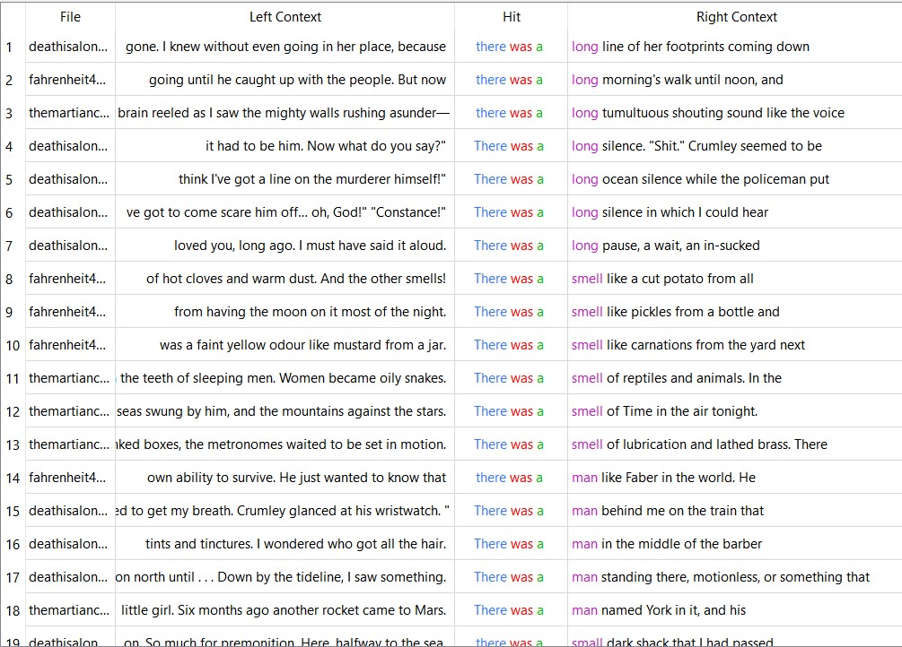
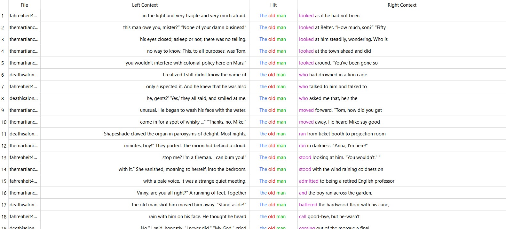
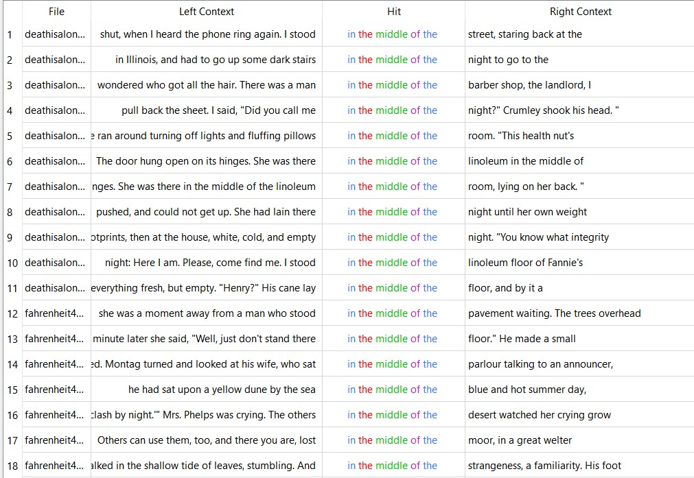
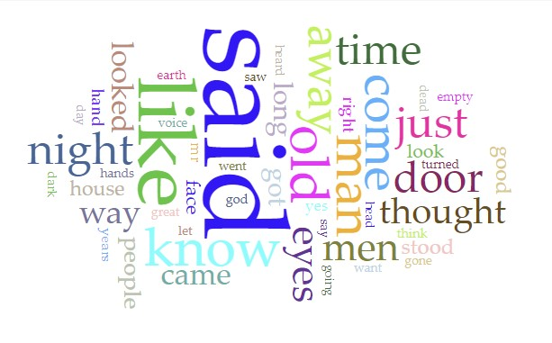
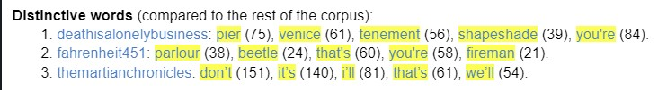
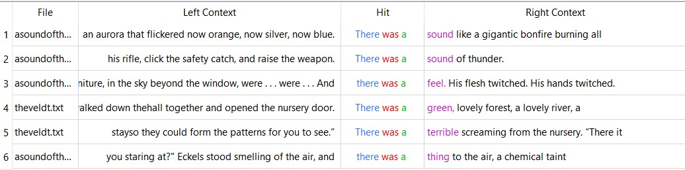
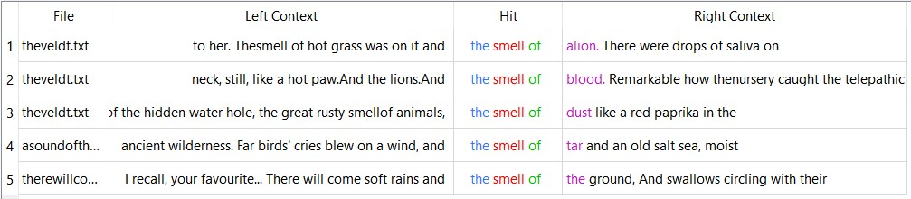
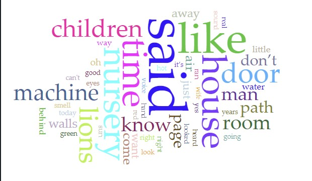
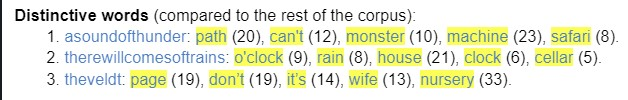

INFORMATION


For my analysis assignment, I compare and contrast three of Ray Bradbury's short stories with 3 of his novels. Of his short stories, I chose A Sound of Thunder, The Veldt, and There Will Come Soft Rains. For his novels, I chose Fahrenheit 451, Death is a Lonely Business, and The Martian Chronicles. The reason I chose these is that I wanted to see if there was a strong similarity or difference between Ray Bradbury's writing styles in his novels versus his short stories. Most of these text files I found on Z-Library or copied from an existing PDF.
SOURCES
This is where I found all these text files!
NOVELS
For his novels, I saw that the term "there was a" had been used many times throughout the three novels, as he uses it 98 times throughout the three. Out of 192,522 tokens, this accounts for .05% of the text's n-grams of 3.

Oftentimes, "long," "smell," "man," "sound," and "small" are used after this term. This seems to be a common way for Bradbury to help the readers visualize the scene he has written.
Another term used often is "the old man," used 84 times in the three novels, typically after a quote from a character. Similar to the last term, it also occurs .05% of the time.

Bradbury seems to have a common theme through these three novels, with all novels mentioning an old man. Possibly Bradbury sees an older character as symbolism, or maybe just enjoys writing about older men.
The long term "in the middle of the" is used 26 times throughout these three novels. Out of 192,516 tokens, this term is used .016% of the time for an N-Gram of 5.

The author has a tendency to use the same terms in order to describe something, as shown in the previous two terms.
Here are some of the common words from Ray Bradbury's novels:

Throughout the three novels, the two most common words are "said" and "like." The word "said" is used 1,317 times and the word "like" is used 795 times. This means that out of the 188,051 words Bradbury uses in his novels, 1.12% of the words are either "said" or "like."
Here are distinct words from the novels:

The distinct words in these novels seem to be either a place or thing, showing the different topics Bradbury writes about in his novels. It is safe to assume that the novel Death is a Lonely Business takes place in Venice with the main character often going to a pier, Fahrenheit 451 could be about a fireman that visits a parlour. The Martian Chronicles is harder to decifer, as the distict words shown are common words.
NOVEL INFO
Total Words
- 188,051
Total Tokens
- 192528
Unique Word Forms
- 12,057
2 N-Gram
- Types: 91,154
- Tokens: 192,525
3 N-Gram
- Types: 164,152
- Tokens: 192,522
4 N-Gram
- Types: 186,920
- Tokens: 192,519
5 N-Gram
- Types: 191,327
- Tokens: 192,516
Death is a Lonely Business Word Count
- 77,602
Fahrenheit 451 Word Count
- 46,129
The Martian Chronicles Word Count
- 64,320
SHORT STORIES
The short stories had very similar writing styles. Like the novels, a very common term was "there was a" which occurs .05% of the 11,191 N-Gram tokens..

This term had also been followed by the word "sound," similar to the novels
A term not used as much in the novels include "the smell of"

Though this is a common term in the short stories, it is rather shocking that this is not as common in the novels.
Here are some common words from Ray Bradbury's short stories:

Similar to the common words from the novels, the two most common words Bradbury uses is "said" and "like." With "said" being used 74 times and "like" being used 56 times, these words occur 1.19% of the time throughout the total 10,929 words.
Here are distinct words from the short stories:

These distinct words give us clues to what each short story is about. A Sound of Thunder could be about someone stumbling across a monster while on a safari. There Will Come Soft Rains could be about a rainstorm that goes on for hours. Finally, The Veldt could be about a man and his wife learning to take care of their children in the nursery.
SHORT STORY INFO
Total Words
- 10,929
Total Tokens
- 11,197
Unique Word Forms
- 2,750
2 N-Gram
- Types: 8,694
- Tokens: 11,194
3 N-Gram
- Types: 10,783
- Tokens: 11,191
4 N-Gram
- Types: 11,117
- Tokens: 11,188
5 N-Gram
- Types: 11,169
- Tokens: 11,185
A Sound of Thunder Word Count
- 4,465
There Will Come Soft Rains Word Count
- 2,092
The Veldt Word Count
- 4,372
CONCLUSION
Ray Bradbury has a very distinct writing style. From my analysis, I noticed different patterns that Bradbury follows to get his point across. For example, in both his short stories and novels, he uses "there was a" to describe what is going on for the reader. Though there were other terms and distinct words used in one and not the other, Bradbury's writing often sticks to a pattern.